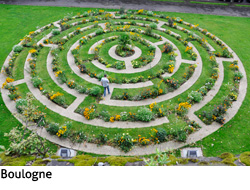
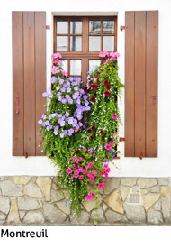

ARRAS is an attractive city with an old-town centre, which has been carefully and attractively restored following the very great damage suffered during the First World War. There are two large open squares in the town. Both are surrounded by Dutch style houses and mansions above arcades at street level. In the smaller of the two squares is the Town Hall, and one of the belfries of France that has now been designated as a World Heritage site. After ascending the belfry you can descend into a subterranean world below – rooms and tunnels carved out beneath ground level – and learn the history of the region. The other notable attraction in Arras is the cathedral.
LILLE is an attractive town about an hours drive away. The most interesting part of a visit to Lille now is the 'old centre', a substantial district containing two ‘squares’ and numerous 17th and 18th century townhouses and other buildings, in a regenerated region of the town. Some remnants of the fortifications that once surrounded the old town can still be seen. There is a substantial cathedral in Lille and several interesting museums. Just on the outskirts of town there is a large shopping outlet centre.
Finally, ETAPLES is a small fishing port across the river from Le Touquet. It is a working fishing port on the river Canche. You can buy fresh fish from the boats or the fish market on a Tuesday and Friday. You can go on boat trips in the estuary or visit the Nature Reserve which has over 420 plant species. The town was a training camp in WW1 and has the largest War Commission cemetery in France. The Military Cemetery is to the north of the town and is the final resting place for over 11,000 war dead.
Seasons and rates

BOULOGNE-SUR-MER 45 minutes away, has an important harbour and claims to be the largest fishing base in Europe. An attractive medieval quarter, the ‘ville haute’, is contained within the old town walls and dominated by a grand, domed cathedral. Amid the newer shopping streets of the 'ville basse' are some of the best food shops in the whole region.LILLE is an attractive town about an hours drive away. The most interesting part of a visit to Lille now is the 'old centre', a substantial district containing two ‘squares’ and numerous 17th and 18th century townhouses and other buildings, in a regenerated region of the town. Some remnants of the fortifications that once surrounded the old town can still be seen. There is a substantial cathedral in Lille and several interesting museums. Just on the outskirts of town there is a large shopping outlet centre.

MONTREUIL SUR MER is about a 20 minute drive and is a something of an undiscovered beauty, with much to enjoy in the historical streets. The town is on a small hill surrounded by ramparts. A delightful walk around the ramparts gives fine views across the surrounding countryside and the river, with the sea in the distance. It is a town that oozes character, with the cobbled streets and old houses linking small squares and being a great pleasure to explore. Be sure not to miss rue Clape-en-Bas, one of the prettiest streets. Once home to Victor Hugo it is the setting for Les Miserables, which is acted out around the town during the summer evenings. Finally, ETAPLES is a small fishing port across the river from Le Touquet. It is a working fishing port on the river Canche. You can buy fresh fish from the boats or the fish market on a Tuesday and Friday. You can go on boat trips in the estuary or visit the Nature Reserve which has over 420 plant species. The town was a training camp in WW1 and has the largest War Commission cemetery in France. The Military Cemetery is to the north of the town and is the final resting place for over 11,000 war dead.
Seasons and rates